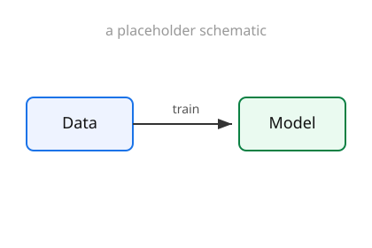
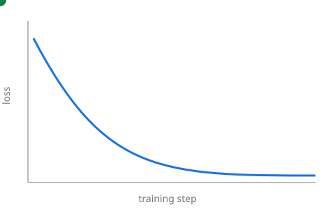

Ouaguenouni Mohamed
Use ← / → (or Space) to move · press S for speaker view
pdflatex round-trip| Key | Action |
|---|---|
→ / Space |
Next step / slide |
← |
Previous |
S |
Speaker view (notes + timer) |
O |
Overview of every slide |
F |
Fullscreen · Esc to exit |
B |
Black / pause the screen |
Add {: .fragment} to reveal a bullet on click — this is Beamer's
\pause / \onslide:
Inline — the gradient step is $\theta_{t+1} = \theta_t - \eta\,\nabla L(\theta_t)$.
A display equation:
$$ \mathbb{E}_{x \sim p}\big[\,f(x)\,\big] = \int_{\mathcal{X}} f(x)\, p(x)\, \mathrm{d}x $$
aligned environments work just like in LaTeX:
$$ \begin{aligned} \max_{x} \quad & c^{\top} x \\ \text{s.t.} \quad & A x \le b \\ & x \ge 0 \end{aligned} $$
def softmax(z):
z = z - z.max() # numerical stability
e = np.exp(z)
return e / e.sum()
print(softmax(np.array([2.0, 1.0, 0.1])))
Fenced code blocks are highlighted automatically (here: Python).
Text on the left

Drop the file in the talk folder, then .

Animated SVG, GIF and video play right in the slide.
A clip autoplays on entry with <video data-autoplay src="clip.mp4">.
The same :::html embed your articles use works here too — a live Plotly /
D3 / canvas widget, hoverable on the slide:
Give matching elements a data-id — they morph between slides. Press →.
Build a diagram or equation step by step — this replaces Beamer overlays.
This slide has a dark background, set with a one-line comment at the top of the slide:
``
Great for separating the parts of a talk.
Press ↓ to drill into detail, or → to skip the whole section.
Stacking slides vertically keeps optional material (proofs, backup, Q&A) out of the main left-to-right flow.
↑ goes back up · → continues the main thread.
Everything should be made as simple as possible, but not simpler.
A normal Markdown blockquote.
Questions?